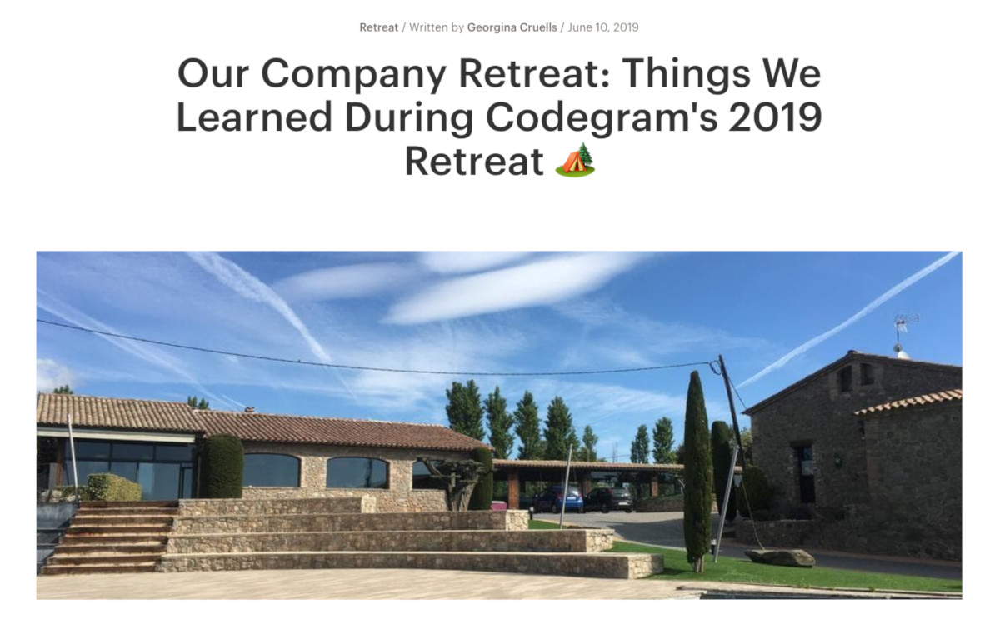
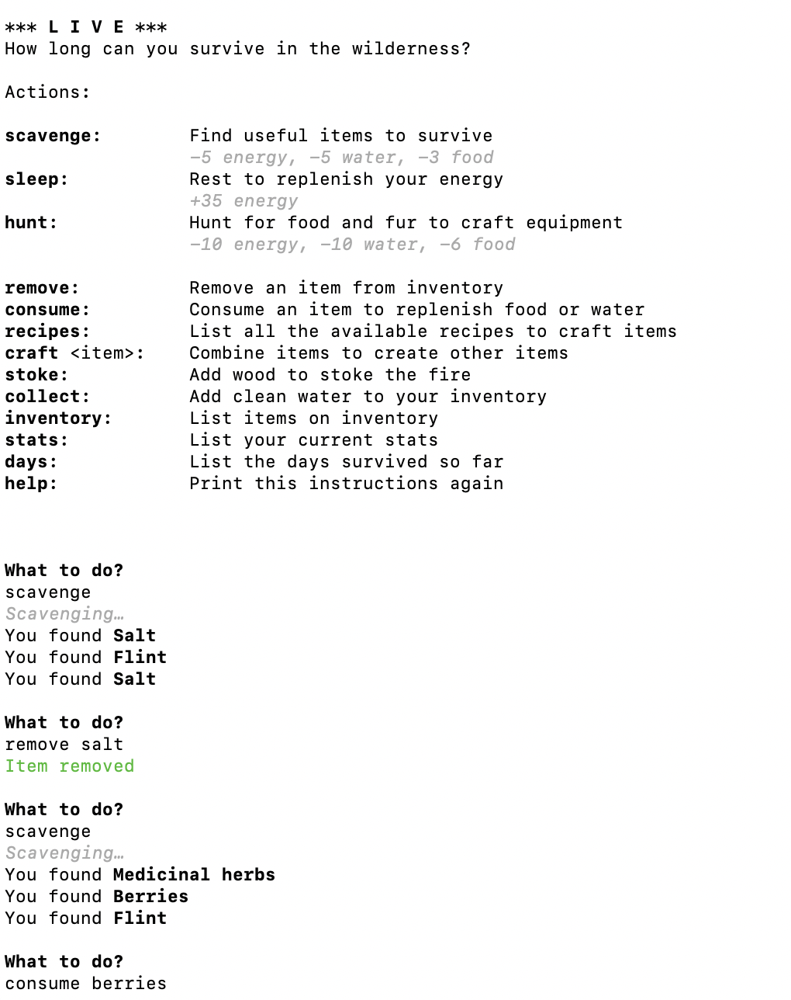

# Rust
A systems programming language that runs blazingly fast, prevents segfaults, and guarantees thread safety.
# Why?
# I want to learn Rust!
A tutorial?
🙅♀️

Read the blogpost
## Port Live to Rust!

# How?
nuriasatorres.com
·
@pincfloit ·
@nuria-fl